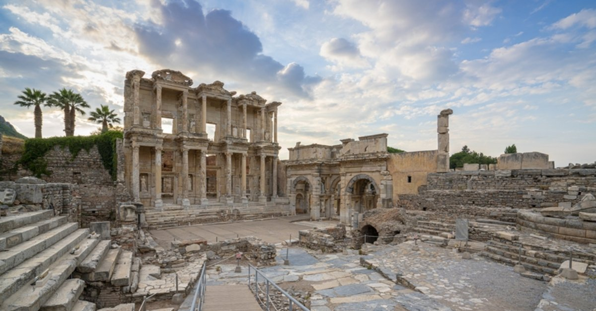
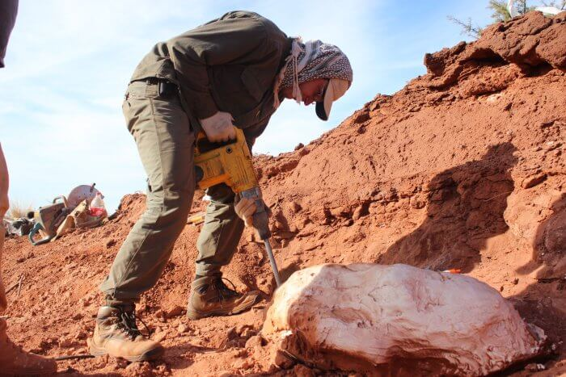

| [ANADOLU] Efes Antik Kenti Detaylı Gezi Rehberi |
[ORTADOĞU] Karelia’nın Antik Gizemleri: Esrarengiz Vottovaara Dağı  |
| [ANTROPOLOJİ] Vikinglerin Tarihi |
| [PALEONTOLOJİ] Arjantin’de En Eski Dinozor Türleri Keşfedildi  |
[SAĞLIK] Sağlık Taraması Nedir  |
Biz Kimiz
2013’ün kasım ayında arkeoloji
ve gezi kültürü dergisi
“Nerde” yayın hayatına başladı.
Yayına girdiği ilk günden itibaren
arkeolojiyi ve gezi kültürünü konu alan içeriğiyle,
takipçilerinin büyük ilgisiyle karşılaşan Nerde,
kendi alanında haberler ve röportajlar
yapan görsel ve yazılı bir haber kaynağıdır.
İletişim
nerdedergisi@gmail.com
® NerdeDergisi2023